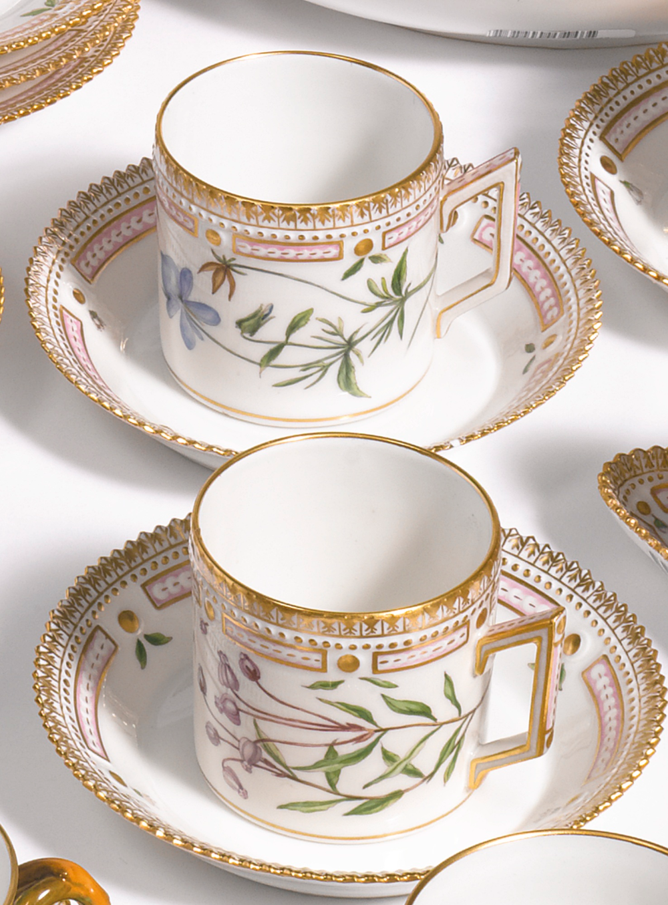

LOOK WHERE WE WORSHIP
Some colors can make us control our breathing better,
and we can relax even in a very non-subconscious type of way.
Warmer or cooler colors can then actually bring about a sense of relaxation,” she says,
adding that those tend to be blues, greens,
and some creams.Given bellow are 3 places that will take you
to the world of crockery decoration

The kitchen decors help in making it livelier and heart of the house. It is the hub of the home as friends and family gather here and create beautiful memories that last a lifetime. Some kitchen decors can help in delivering the message to your loved ones with delicious food and can lighten up their mood
Click on the images below to buy that or something close to that :3 !!!
THANK YOU!